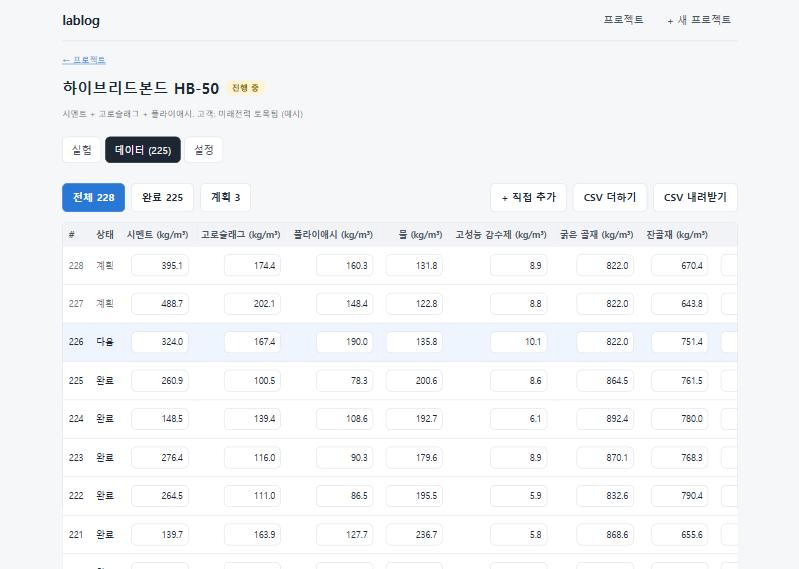
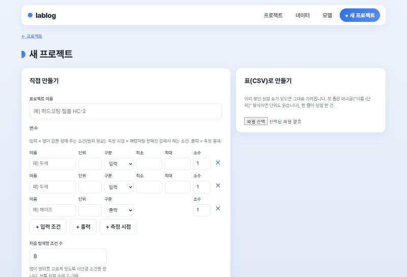
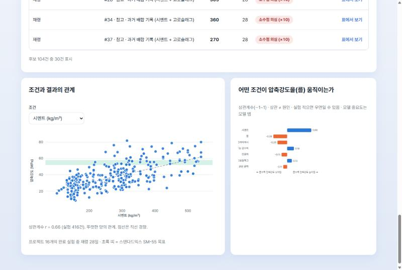

lablog v3
조건은 앱이 정하고,
사람은 결과 숫자만 넣는다
제품개발 실험 관리 + 조건 → 결과 예측 + 목표를 만족할 조건 제안. 목표는 "목표값 ± 허용", 만족하면 실험 종료.
제품개발팀 공유용 · 2026-11-07 · 예시 데이터는 UCI 콘크리트 공개 데이터 1,030건
1 / 12
문제: 입력은 귀찮고, 다음 조건은 짐작이다
지금까지
- 실험마다 절차를 쓰고 단계를 체크하고 조건·결과를 이름-값-단위로 적는다 → 등록 한 건에 클릭 수십 번
- 다음 실험 조건은 경험으로 짐작해 정한다. 빗나가면 하루가 간다
- 데이터는 엑셀·노트·메신저에 흩어져 모델을 만들 표가 없다
v3
- 프로젝트에 입력(바꿀 조건과 범위) · 출력 · 목표만 적는다. 목표는 목표값 ± 허용(강도 35 ± 3): 10이 목표인데 20이면 만족이 아니다
- 앱이 실험 순서를 정한다. 카드에 조건이 적혀 있고, 사람은 결과 숫자 + 저장 1번
- 조건과 결과만 쌓이니 그 표가 그대로 학습 데이터. 8건부터 모델이 돈다
절차·단계·메모 체크리스트는 없앴다. 데이터(콘크리트 1,030건)와 고객 목표 판정만 남기고 전부 다시 만들었다.
2 / 12
한 실험의 흐름
1. 프로젝트 만들기
변수 몇 줄, 목표 한 줄
→
2. 앱이 계획
범위를 고르게 덮는 조건 N개
→
3. 결과만 입력
숫자 넣고 Enter
→
4. 모델이 다음 조건
목표를 향해 3개씩
→
5. 목표 달성 → 종료
허용 안에 들면 실험 끝
등록 한 건의 입력
1 클릭 + 출력 수만큼의 숫자
조건은 카드에 이미 적혀 있다. 고쳐야 할 때만 "조건을 고쳐야 한다면"을 연다.
측정 시점이 있는 실험
재령 7일·28일처럼 한 배합을 여러 시점에 재면, 조건 하나가 실험 여러 건으로 펼쳐진다. 목표의 "28일일 때"에서 시점이 자동으로 정해진다.
3 / 12
화면 · 프로젝트 목록

- 카드마다 목표 상태(달성·종료 / 진행 중), 완료·계획 수, 부족한 목표, "다음 실험 결과 넣기" 버튼. 예시 12개 중 아홉은 20여 건 만에 끝났고 셋은 진행 중.
- 전체 백업(JSON)과 가져오기. 예전 실험 노트 백업도 조건·결과·요구만 옮겨 읽는다.
4 / 12
탭 1 · 프로젝트 (다음 실험 카드)

- 왼쪽: 다음 실험 #226 — 조건은 읽기만, 결과 칸에 숫자를 넣고 "저장하고 다음 →". 아래는 최근 결과와 목표 판정(✓ ✗).
- 오른쪽: 목표마다 만족 건수와 가장 가까운 값, 목표 추적 차트(초록 띠가 목표 범위), 모델 요약. 데이터·모델·설정은 상단 버튼.
5 / 12
탭 2·3 · 데이터와 모델

데이터: 같은 변수를 가진 프로젝트의 실험을 한 표로(모델이 학습하는 표). 칸 바로 수정, CSV, 백업, 산점도와 조건별 상관.

모델: 적용 중인 모델의 신뢰도·중요도 → 새 모델 학습(결과·조건·알고리즘·파라미터) → 버전 저장·적용 → 목표 만족 후보, 조건 바꿔 보기.
6 / 12
새 프로젝트 만들기

변수 줄 몇 개와 탐색 조건 수만 적으면 첫 계획이 생긴다. CSV가 있으면 열마다 입력/출력만 고르면 끝.

프로젝트 화면의 목표 추적 차트. 실험이 목표 띠(초록)로 가까워지는지 한눈에.
7 / 12
실험 순서를 정하는 방법
| 단계 | 방법 |
|---|
| 탐색 | 가운데 점 1개 + 라틴 하이퍼큐브(범위를 차원마다 고르게 덮는 무작위 설계) N−1개. N은 "처음 탐색할 조건 수"(기본 8, 보통 입력 수의 2~3배) |
| 측정 시점 | 조건 × 시점 값(예: 7일, 28일) 조합으로 펼친다 |
| 개선 | 계획이 바닥나면 자동. 모델이 믿을 만하면 "목표 만족 확률 + 모델이 모르는 정도"로 3조건. 아니면 탐색 조건을 몇 개 더 |
| 사람이 끼어들기 | 후보 카드의 "다음 실험으로", 조건 바꿔 보기, 데이터 표에서 조건 수정·"지금 하기", 직접 추가 |
임의로 정하되 근거가 있다: 탐색은 공간을 고르게, 개선은 목표를 향해, 모델이 모르는 곳도 조금 섞어 지역 최적에 갇히지 않게.
8 / 12
모델 (브라우저 안에서, 외부 라이브러리 없이)
| 항목 | 방법 |
|---|
| 학습 데이터 | 같은 변수를 가진 모든 프로젝트의 완료 실험을 모아서(프로젝트 차이는 표시 변수로). 프로젝트 하나에 20건이면 약하지만 12개를 모으면 200건 |
| 입력·출력 | 값이 달라지는 입력·측정 시점 변수 → 출력마다 모델 하나. 완료 8건부터 |
| 직접 학습 | 결과·조건·알고리즘(RF·선형·kNN·GBM)·파라미터·교차검증 겹을 골라 학습 → 버전 저장·적용. 적용 모델이 제안·예측·계획에 쓰임. 기본은 자동(RF vs 선형) |
| 불확실성 | 교차검증 오차 ⊕ 나무들의 흩어짐. 본 적 없는 조건일수록 ±가 넓어진다 |
| 목표 만족 확률 | Φ(여유 ÷ 오차). 필수 목표의 곱. 입력에 건 목표(시멘트 ≤ 300)는 탐색 범위를 좁힌다 |
| 속도 | 232건 학습 0.2초, 1,030건 1.8초, 제안 50 ms |
9 / 12
예시 데이터로 확인 (콘크리트 1,030건)
선택한 모델 (LF는 선형)선형 회귀
- 모델이 많이 보는 조건은 재령·시멘트·물. 알려진 지식과 맞는다.
- 전체 1,030건 학습 시 R² 0.84. 목표 40 ± 3 제안은 예측이 목표 ±3 안.
- 예시 프로젝트 12개(약 200건)를 모아 학습하면 모든 프로젝트에서 R² 0.72~0.78. 따로 학습하면 0.07~0.96으로 들쭉날쭉.
- HB-70(28일 70 ± 3 MPa, 아직 미달): 실험 순서 차트가 목표로 올라가는 중임을 보여 주고, 모아 학습한 모델이 다음 조건을 제안한다.
- 서비스 테스트 14개 + 화면 흐름 테스트 4개가 이 수치와 흐름(만들기 → 결과 입력 → 다음 실험 자동 생성)을 지킨다.
10 / 12
어디까지 믿어도 되는가
믿어도 되는 것
- 교차검증 R² 0.8 이상이면 새 조건에서도 잘 맞히는 편, 0.6~0.8이면 경향은 맞힌다.
- 후보는 실험한 범위 안에서만 고르므로 터무니없는 조건이 나오지 않는다.
- ± 범위는 대략 95%가 들어오는 구간. 본 적 없는 조건일수록 넓어진다.
조심할 것
- 확률은 보장이 아니다. 실험 30건 미만이면 흔들린다. 후보도 실험으로 확인한다.
- 범위 밖은 모른다. 직접 넣은 값이 범위를 벗어나면 경고가 뜬다.
- 문자 조건(기재 종류 등)은 아직 쓰지 않는다. 프로젝트 안의 실험만 쓴다.
- 데이터는 이 브라우저에만 있다. 백업(JSON)을 내려받아 보관한다.
11 / 12
정리와 다음
이번에 만든 것
- 상단 탭 셋: 프로젝트(다음 실험 카드) · 데이터(모아 보는 표) · 모델(모아 학습)
- 앱이 정하는 실험 순서(탐색 → 모델 개선), 결과만 입력
- 교차검증으로 고른 모델, 목표 만족 확률, 조건 제안, 조건 바꿔 예측
- CSV·JSON 가져오기·내보내기, 예전 실험 노트 백업 변환
- 테스트 18개, 문서
docs/01_문제정의와_설계.md
다음 과제
- 문자 조건 입력
- 변수 이름이 조금 다른 프로젝트도 맞춰 모으기(별칭)
- "이 조건은 고정하고 나머지만" 제안 UI
- 실제 팀 데이터로 R² 확인 → 믿을 수 있는 결과부터 쓰기
- 팀 공유(지금은 파일 백업으로)
실행: app/에서 npm install → npm run dev. 처음 열면 예시 데이터가 들어 있다.
12 / 12